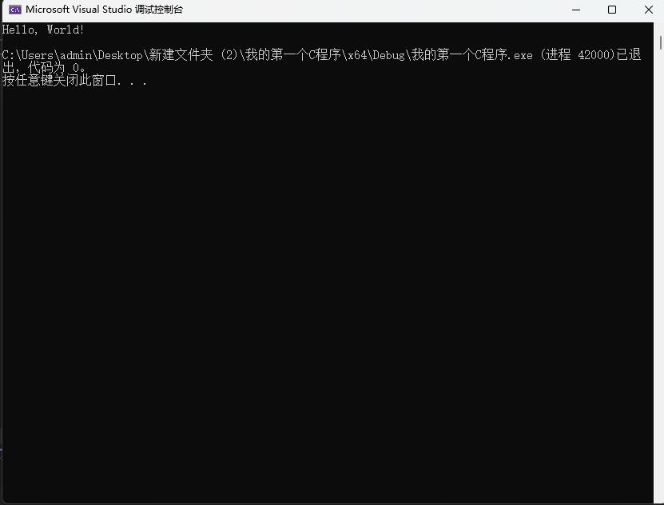

一个简单的C程序
在接触C语言之前，大家或多或少会对C语言产生敬畏之心，认为它是一门很高深的语言，实则不然，且看代码：
1 |
|
运行结果

代码分析
观察这个程序代码，大家会发现它非常的简单，然而，作为一个程序它却相当完整。
我们可以简单将其分为三个部分，一是由#include打头的部分，二是int main()，三则是{}内的内容，这三个部分的存在，也就构成了一个完整的C程序
接下来将对这三个部分进行逐一分析。
1 |
#号所起的是一个标识的作用，是一个规范，可以看作无实际意义。include在英文中有包含的意思。stdio.h可以分为四个部分解读，std是standard的缩写，standard意为标准；i是input的缩写，input意为输入；o是output的缩写，output意为输出；h是head的缩写，head意为头，而.h顾名思义则是头文件的后缀。将这样一段代码逐字分析后拼接在一起，清晰指向了一个信息“这个程序可能包含一个标准输入输出的头文件”。
1 | int main() |
int被称为关键字，其作用是指定义main函数返回值的类型为int型，int型即整型，暂且可以将其等价于整数。在程序中这一部分称为函数头。main函数作为C程序中至关重要的部分，在每一个C程序中都会有一个main函数，作为一个程序的入口部分，也就是说程序都是从main函数头开始执行，然后进入到main函数中，执行其中语句的。()内的内容是我们可以填充的，初学C程序，可以暂且不管。
1 | { |
{}可以起到一个囊括的作用，其内部作为一个整体，称之为函数体。printf()作为其中的一部分，我们将其成为执行语句，其中print的意思为打印或者输出，而f是format的缩写，意为格式化，故printf()的意思就是格式化输出括号内的内容。这里我们提到一个词输出，正是我们之前所提到了的“标准输入输出”中的“输出”。
1 | return 0; |
return 0并不属于执行语句，我们将其称之为return语句。return的作用是向程序返回一个值，在这里就是0，而0又恰好是一个整数，符合int类型。
值得一提的是，C程序是严格区分中英文的，一切语句都要用英文进行书写，且在函数体内部的内容，执行语句和return语句末尾，都要加上；表示一条语句的结束，这也就意味着，C程序在编译时会跳过空格以及空行（和注释）直接跳到下一条语句。
总结
对这样一个代码进行逐字分析后，相信大家对于C程序的概念有了一个具体的认知，并且，对于C语言不再过于恐惧。
- 本文标题：C语言教程_02：一个简单的C程序
- 本文作者：云湍/Cloudstill
- 创建时间：2022-10-06 20:20:11
- 本文链接：2022/10/06/C语言教程-02：一个简单的C程序/
- 版权声明：本博客所有文章除特别声明外，均采用 BY-NC-SA 许可协议。转载请注明出处！